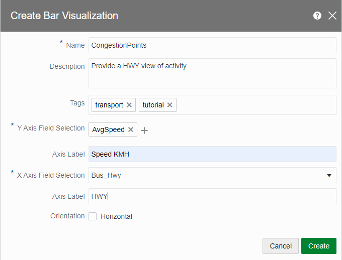
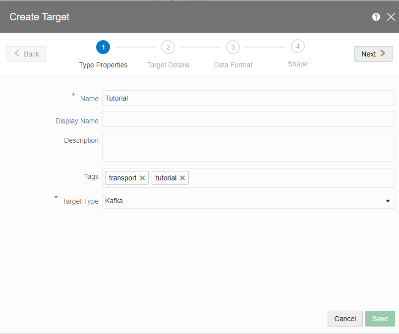

Oracle GoldenGate Stream Analytics(以下、GGSA) は、IoT データ、パイプライン、ログデータ、ソーシャルメディアといった Stream データをリアルタイムに分析的計算処理するテクノロジーを提供するプラットフォームです。
このエントリーでは、GGSA の Marketplace からのプロビジョニングからチュートリアル完了までの手順を記します。
前提条件
- クラウド環境
- Oracle Cloud のアカウントを取得済みであること
ハンズオン環境の全体像
OCI Marketplace から GGSA を最小構成でプロビジョニングすると、以下の環境が作成されます。本エントリーでは、この環境を用いてハンズオンを実施します。

作成する Pipeline の全体像
このエントリーでは、リアルタイムに流れてくる交通データを分析することを行います。最終的に完成する Pipeline は以下のようになります。

それぞれの Stage で実施されることについて簡単に説明します。
1. 車両の走行データ
リアルタイムに流れてくる交通データを Java プログラムで疑似的に表現しています。Java プログラム中では、Kafka の特定 Topic(tutorial)に対してメッセージを publish しており、本ハンズオンは該当の Topic から GGSA がメッセージを consume する所から始まります。
関連するハンズオンの章:
2. Atlanta の地図情報
使用するデータには、アメリカ全土の交通データが含まれています。今回は、その中でも Atlanta の交通データに絞り込んで分析を行うために、地理的な境界を定義します。
関連するハンズオンの章:
3. 地理的境界で絞り込む
2. Atlanta の地図情報で定義した地理的境界に含まれるデータを入力データの緯度・経度を元に判定し、Atlanta 内の交通データに絞り込みを行います。
関連するハンズオンの章:
4. 平均の速さを元に絞り込む
以降のステージでは、動いている車両に対して分析を行うため、その前処理として止まっている車両をストリームデータから取り除きます。
関連するハンズオンの章:
5. 平均の速さを元にラベリングする
動いている車両に対して、いくつかのルールを設定しその判定結果に応じてラベリング、結果の可視化を行います。
関連するハンズオンの章:
6. Kafka に対して publish
パイプライン処理が完了したデータを別のサービスで活用するために Kafka に publish します。
関連するハンズオンの章:
1. Marketplace からインスタンスのプロビジョニング
はじめに、OCI コンソール画面左上のハンバーガーメニューを展開し、マーケットプレイス > すべてのアプリケーション と選択します。

アプリケーションの一覧画面で、検索窓にStream Analyticsと入力し、Oracle GoldenGate Stream Analytics - UCM を選択します。

Oracle 使用条件を確認し上でこれに同意します。にチェックを入れた後に、スタックの起動をクリックします。

自動入力された項目を確認し、次をクリックします。

作成するインスタンスに関する情報を入力します。
- Display Name: 任意の名前
- Host DNS Name(オプション): ggsa

インスタンスが属するネットワークに関する設定を入力します。
- Use Existing Network: チェックを外す
- VCN Network Compartment(オプション): 任意のコンパートメント名
- Subnet Network Compartment(オプション): 任意のコンパートメント名(VCN Network Compartment と同様のコンパートメント名)
- New VCN DNS Name: vcn
- New VCN CIDR: 10.2.0.0/16
- New Subnet DNS Name(オプション): subnet
- New Subnet CIDR: 10.2.1.0/24

インスタンスに関する情報を入力します。
- Availability Domain: 任意の AD を選択
- Compute Shape: VM.Standard2.4
- Assign Public IP: チェックを入れる

インスタンスに SSH アクセスするための公開鍵を入力します。

次をクリックした後に、入力内容を確認して、作成を押します。

リソース・マネージャーのジョブの状態が成功となっていれば、インスタンスのプロビジョニングは完了です。

2. チュートリアルに使用するコンテンツのダウンロード
任意の SSH クライアントを使用して、作成したインスタンスに SSH 接続します。また、以降の流れはドキュメントで公開されている GGSA のチュートリアルの内容に準拠しています。
まずは、チュートリアルに使用するコンテンツを任意のディレクトリにダウンロードし、展開します。
# download tutorial contents
wget http://www.oracle.com/technetwork/middleware/complex-event-processing/learnmore/resourcesfortutorials-4015265.zip
# extract the zip
unzip resourcesfortutorials-4015265.zip -d resources
展開した先のディレクトリには以下のコンテンツが含まれています。
ls resources/
BusEvents.json OsacsEventFeeder.jar SalesTransactions.json suppliers.sql
3. チュートリアル
3-1. チュートリアル用のイベント・ストリームを Kafka に Publish する
まずは、チュートリアル用の Topic を作成します。
$KAFKA_HOME/bin/kafka-topics.sh --create --zookeeper localhost:2181 --partitions 5 --replication-factor 1 --topic tutorial
Created topic "tutorial".
次にダウンロードしたコンテンツに含まれる Java プログラムを使用して、作成した Topic に対してデータを送信します。
java -jar OsacsEventFeeder.jar --zookeeper localhost:2181 --json BusEvents.json --topic tutorial
log4j:WARN No appenders could be found for logger (org.apache.zookeeper.ZooKeeper).
log4j:WARN Please initialize the log4j system properly.
log4j:WARN See http://logging.apache.org/log4j/1.2/faq.html#noconfig for more info.
REQUEST: { "BUSdirection" : "Southbound", "BUStime" : "2016-12-02T10:48:55.000Z", "BUStimePoint" : "Fulton Industrial & MLK", "BUSroute" : 73, "BUSstopId" : 905269, "BUStripId" : 5326786, "BUSvehicle_type" : 25, "BUStype_ID" : 30, "BUSlong" : -84.5376211, "BUSlat" : 33.7609777, "Bus_Speed" : 0, "Bus_DriverNo" : 160019, "Bus_Hwy" : "HWY66" }
// ...
REQUEST: { "BUSdirection" : "Southbound", "BUStime" : "2016-12-02T10:50:37.000Z", "BUStimePoint" : "Roswell & Hammond", "BUSroute" : 5, "BUSstopId" : 902751, "BUStripId" : 5339304, "BUSvehicle_type" : 15, "BUStype_ID" : 65, "BUSlong" : -84.3805816, "BUSlat" : 33.8599981, "Bus_Speed" : 0, "Bus_DriverNo" : 0, "Bus_Hwy" : "HWY66" }
RESPONSE: Topic: tutorial, Offset: 1
// ...
REQUEST: { "BUSdirection" : "Southbound", "BUStime" : "2016-12-02T10:50:37.000Z", "BUStimePoint" : "Roswell & Hammond", "BUSroute" : 5, "BUSstopId" : 902751, "BUStripId" : 5339304, "BUSvehicle_type" : 15, "BUStype_ID" : 65, "BUSlong" : -84.3805816, "BUSlat" : 33.8599981, "Bus_Speed" : 0, "Bus_DriverNo" : 0, "Bus_Hwy" : "HWY66" } のような文字列が出力されれば、Kafka に対するデータの送信が成功しています。
3-2. GGSA で Kafka の Connection を定義する
ログインしたユーザー(opc)のホームディレクトリにREADME.txtというファイルが存在し、こちらに各種接続情報が記載されています。
###### Database
Your root password for MySQL metadata store is FKUXONKoVkqkVFer4PS/
Your OSA_DEMO user password for MySQL 'OSA_DEMO' database is Welcome123!
Your OSA user password for MySQL osa metadata store (OSADB database) is w_R/ARVFDWjoGxzHTPyp
###### VCN SECURITY RULES
To access OSA and Spark UIs from the internet via HTTPS, set up stateless ingress rules to port 443.
###### OSA UI
Your osaadmin password to login to OSA UI is 3ZtwM5srOAE=
You can access OSA UI using https://<PUBLIC_IP>/osa
###### OSA RUNTIME
Access Spark UI using https://<PUBLIC_IP>/spark
List of well known ports...
KAFKA BROKER PORTS (9092) ZOOKEEPER PORT (2181)
MYSQL PORT (3306)
###### SPARK DEFAULT USER CREDENTIALS
Username: sparkadmin
Password: Sparkadmin#123
###### CHANGING PASSWORDS
Use System Settings in OSA UI to change the OSA Admin password.
Use System Settings in OSA UI to set Spark admin user name and password.
Use mysql -uroot -p to change MySQL root user password.
ここからの作業は、OSA(Oracle Stream Analytics)の Web UI にて実施するため、https://<PUBLIC_IP>/osaへアクセスします。アクセスすると、以下のような画面が表示されるので、README.txtに記載のあるユーザー名/パスワードの組み合わせでログインします。(上記の例だと、osaadmin/3ZtwM5srOAE=)

ログイン後に、Catalog > Create New Item > Connection > Kafkaと押し、Kafka の接続情報を定義します。

以下のように入力し、Next >をクリックします。
- Name: Tutorial
- Tag(オプション): tutorial, transport
- Connection Type: Kafka

Kafka の接続情報を以下のように入力します。
- Zookeepers: localhost:2181
Test Connectionのボタンをクリックし、Successfulと表示されれば、GGSA と Kafka の接続は成功しているので、Saveを押して、設定を保存します。

3-3. Stream の作成
Catalog > Create New Item > Stream > Kafka とクリックし、Stream を新規に作成します。

以下のように入力して、Next >をクリックします。
- Name: Tutorial
- Tags(オプション): tutorial, transport
- Stream Type: Kafka

Stream を構築するために必要な情報を入力し、Next >をクリックします。
- Connection: tutorial
- Topic name: tutorial
- Data Format: JSON

Allow missing column namesにチェックを入れて、Next >をクリックします。

Saveを押し、Stream の構成情報を保存します。

3-4. Geo Fence の作成
車両情報を特定のエリア(今回は、Atlanta)に限定するために、その境界を定義します。 Catalog > Create New Item > Geo Fenceとクリックし、Geo Fence を新規に作成します。

以下のように入力し、Saveをクリックします。
- Name: Tutorial
- Tags(オプション): tutorial, transport
- Geo Fence Type: Manually Created Geo Fence

Saveをクリックすると、世界地図が表示されるので、Atlanta の周囲を Polygon tool を用いて、以下のように囲います。また、入力項目は以下のように入力します。
- Name: Atlanta
- Description: Monitor public buses transport in Atlanta.

これで、Geo Fence の作成は完了です。
3-5. Pipeline の作成
次に、車両データをリアルタイムに分析するための Pipeline を作成します。 Catalog > Create New Item > Pipelineとクリックし、パイプラインを新規に作成します。

以下のように入力し、パイプラインを作成します。
- Name: Tutorial
- Description(オプション): Tutorial: Vehicle Monitoring Pipeline.
- Tags(オプション): tutorial, transport
- Stream: Tutorial

作成が完了すると、以下のようにパイプラインが作成され、Kafka に対して Publish されているストリームデータを参照することができます。

3-6. Atlanta の車両に限定する
送信され続けている車両の情報を Atlanta の車両に限定したいと思います。Tutorial を右クリックし、Add a Stage > Patternと選択します。

Spatialの下のGeo Filterを選択します。

以下のように入力し、Stage を作成します。
- Name: PatternGeoFenceInside
- Description(オプション): Spatial analytics in the city of Atlanta.

適切に設定できていると、先ほど作成した Geo Fence 内の車両がマップに表示されるようになります。

3-7. 止まっている車両をストリームデータから除外する
Atlanta の車両情報のストリームデータから止まっている車両データを除外したいと思います。PatternGeoFenceInside を右クリックし、Add a Stage > Query を選択します。

以下のように入力し、Query Stage を作成します。
- Name: BusSpeed0Plus
- Description(オプション): Analytics only on moving vehicles.

まずは、止まっている車両をストリームデータから除外するために以下のようなフィルター処理を追加します。
- Macth All にチェック
- フィルターの条件として、
Bus_Speed greater than 0を入力

また、止まっているかどうかの判断は、瞬間的な速さではなく、ある一定時間の平均の速さ(今回は、10 秒間の平均の速さ)を元に判断するため、Sourcesで時計マークをクリックし、以下のように入力します。
-
Windows Type: Time, with Slide
- Range: 10 seconds
- Evaluation frequency: 10 seconds

次に、Summariesで集約処理を加えます。
- Retain All Columns のボタンをクリック
- Add a GroupBy > Add a Filed を押し、BUStripIdを選択します。

Add a Summaryを押し、以下のように入力します。
- function: AVG
- filed: Bus_Speed

次に、Expression Builder を押し、NO_VIOLATION と入力します。

最後に、Live Output 内のプロパティ名を以下のように変更します。
- BusType_ID → BusID
- AVG_of_Bus_Speed → AvgSpeed
- calc → Violation

3-8. リアルタイム分析のためのルールを作成する
ここまでで分析に必要なデータの加工や作成は完了していため、実際の分析ルールを作成していきます。具体的には、平均の速さを元に以下のようなルールを作成します。
-
全ての Highway に対して名前を設定する(空白の Highway に対しては、
UNKNOWNという名前を設定する) -
60 < AvgSpeed の場合、Violation を RECKLESS に設定する
-
45 < AvgSpeed ≤ 60 の場合、Violation を MAJOR に設定する
-
35 < AvgSpeed ≤ 45 の場合、Violation を MINOR に設定する
それでは、作成していきます。まずは、BusSpeed0Plusで右クリックをし、Add a Stage > Ruleを選択します。
1. 全ての Highway に対して名前を設定する
まずは、Add a Ruleをクリックし、以下のようにルールを作成します。
- Rule Name: DFLT_HWY
- Description(オプション): Ensure all highways have a name value.
そして、すべての Highway に対して名前を持たせる(空白を許容しない)ために、以下のようなルールを設定します。
- IF:
Bus_Hwy equals(sensitive) <blank> - THEN:
SET Bus_Hwy TO UNKNOWN

2. 60 < AvgSpeed の場合、Violation を RECKLESS に設定する
次に、10 秒間の平均の速さが 60[km/h]を超えている車両に対して、RECKLESSというラベルを設定したいと思います。
Add a Ruleをクリックし、以下のようにルールを作成します。
- Rule Name: RECKLESS
- Description(オプション): Bus drivers traveling at excessive speed.
そして、平均の速さが 60[km/h]を超えている車両を検出するために以下のようなルールを設定します。
- IF:
AvgSpeed greater than 60 - THEN:
SET Violation TO RECKLESS

3. 45 < AvgSpeed ≤ 60 の場合、Violation を MAJOR に設定する
次に、10 秒間の平均の速さが 45[km/h]より速く、60[km/h]以下の車両に対して、MAJORというラベルを設定したいと思います。
Add a Ruleをクリックし、以下のようにルールを作成します。
- Rule Name: MAJOR
- Description(オプション): Bus drivers traveling at high speeds.
そして、平均の速さが 45[km/h]より速く、60[km/h]以下の車両を検出するために以下のようなルールを設定します。
- IF:
AvgSpeed greater than 45 AND AvgSpeed lower than or equals 60 - THEN:
SET Violation TO MAJOR

4. 35 < AvgSpeed ≤ 45 の場合、Violation を MINOR に設定する
次に、10 秒間の平均の速さが 35[km/h]より速く、45[km/h]以下の車両に対して、MINORというラベルを設定したいと思います。
Add a Ruleをクリックし、以下のようにルールを作成します。
- Rule Name: MINOR
- Description(オプション): Bus drivers traveling at low speeds.
そして、平均の速さが 35[km/h]より速く、45[km/h]以下の車両を検出するために以下のようなルールを設定します。
- IF:
AvgSpeed greater than 35 AND AvgSpeed lower than or equals 45 - THEN:
SET Violation TO MINOR

1~4 のルールの設定が完了すると、以下のような Live Output(一例)が得られます。

3-9. 得られた分析結果を表示する
先ほどまでで、いくつかのビジネスルールを設定しストリームデータの分析を実施したため、次はそのデータを表示してみたいと思います。具体的には、以下のようなデータを表示したいと思います。
- ラベリング(RECKLESS/MAJOR/MINOR)した車両データを Atlanta の地図上に表示する
- Highway 毎の平均の速さを表示する
1. ラベリング(RECKLESS/MAJOR/MINOR)した車両データを Atlanta の地図上に表示する
それでは、作成していきます。Speed Violation のVisualizationsタブから”+”アイコン(Add a Visualization)を押し、ドロップダウンの中からGeo Spatialを選択します。

Propertiesにて、以下のように入力します。
- Name: Driver Monitor
- Description(オプション): Spatial Analytics for Vehicles in the Atlanta District.
- Tags(オプション): transport, tutorial
- Lat: BUSlat
- Long: BUSlong
- Key: BUStripId

次に、Customizationsで以下のように入力します。
| Field | Operator | Value | Style |
|---|---|---|---|
| Violation | equals | RECKLESS | Orange arrow |
| Violation | equals | MAJOR | Purple arrow |
| Violation | equals | MINOR | Blue arrow |

Createを押すと、以下のようにラベリングされた車両情報が Atlanta 上に表示されていることが確認することができます。

2. Highway 毎の平均の速さを表示する
次に、Highway 毎の車両の平均の速さを棒グラフで表示したいと思います。Speed Violation のVisualizationsタブから”+”アイコン(Add a Visualization)を押し、ドロップダウンの中からBarを選択します。

以下のように入力します。
- Name: CongestionPoints
- Description(オプション): Provide a HWY view of activity.
- Tags(オプション): transport, tutorial
- Y Axis Field Selection: AvgSpeed
- Axis Label(オプション): SpeedKMH
- X Axis Field Selection: Bus_Hwy
- Axis Label(オプション): HWY

正しく設定できていれば、Highway 毎の車両の平均の速さが以下のように表示されます。

3-10. Target の作成
ストリーム処理の結果を外部に出力するための Target を定義します。SpeedViolation で右クリックし、Add a Stage > Targetと押し、以下のように入力します。
- Name: TutorialTarget

Createを押し、以下のように入力して、Target を定義します。
- Name: Tutorial
- Tags(オプション): tutorial, transport
- Type: Kafka
- Connection: tutorial
- Topic name: Tutorial
- Data Format: JSON
- Create nested json object にチェック
Shape は以下のように設定します。
| Field Name | Field Path | Field Type |
|---|---|---|
| Violation | Violation | Text |
| DriverNumber | Number | Integer |
| DriverNumber | Number | Integer |
| Highway | Bus_HWY | Text |



Live Output が以下のように表示されれば、完了です。

3-11. Pipeline の Publish
作成した Pipeline を Publish します。Publishを押し、以下のように入力します。
- Batch Duration: 1000 (Milliseconds)
- Executor Count: 2
- Cores per Executor: 2
- Executor Memory: 3000 (Megabytes)
- Cores per Driver: 1
- Driver Memory: 1800 (Megabytes)
- Log level: INFO
- Pipeline Topic Retention: 3600000 (Milliseconds)
- Enable Pipeline Topics にチェック
- Input Topics Offset: latest
Publishをクリックし、Catalog 画面で作成した Pipeline の Status が Running となっていれば完了です。

3-12. (参考) Publish されたメッセージを確認する
トピックの一覧を確認すると、GGSA の UI 上で作成した Topic(Tutorial)が含まれていることが確認できます。
$KAFKA_HOME/bin/kafka-topics.sh --list --zookeeper localhost:2181
Tutorial // GGSAのUI上で作成したTopic
__consumer_offsets
sx_Tutorial_BusSpeed0Plus_draft
sx_Tutorial_BusSpeed0Plus_public
sx_Tutorial_PatternGeoFenceInside_draft
sx_Tutorial_PatternGeoFenceInside_public
sx_Tutorial_SpeedViolation_draft
sx_Tutorial_SpeedViolation_public
sx_Tutorial_TutorialTarget_draft
sx_Tutorial_TutorialTarget_public
sx_Tutorial_Tutorial_draft
sx_Tutorial_Tutorial_public
sx_Tutorial_public_1_Tutorial_offset
sx_backend_notification_zIHBNqNV
sx_messages_zIHBNqNV
tutorial
パイプライン処理が完了した後のデータを取得する場合は、この Topic(Tutorial)からメッセージを取得すればよいことになります。本ハンズオンでは、簡易的に Kafka に付属しているコンソール用の Consumer を用いて確認します。
$KAFKA_HOME/bin/kafka-console-consumer.sh --bootstrap-server localhost:9092 --topic Tutorial
{"Violation":"NO_VIOLATION","AvgSpeed":30.0,"DriverNumber":14734483,"Highway":"HWY66"}
{"Violation":"NO_VIOLATION","AvgSpeed":21.0,"DriverNumber":1.1E+2,"Highway":"HWY66"}
{"Violation":"MAJOR","AvgSpeed":59.0,"DriverNumber":2760439,"Highway":"MR665"}
{"Violation":"RECKLESS","AvgSpeed":96.0,"DriverNumber":13241,"Highway":"M2 "}
{"Violation":"MINOR","AvgSpeed":37.0,"DriverNumber":13217,"Highway":"HWY66"}
{"Violation":"MAJOR","AvgSpeed":53.0,"DriverNumber":0,"Highway":"MR335"}
{"Violation":"MINOR","AvgSpeed":39.0,"DriverNumber":13599829,"Highway":"MR599"}
{"Violation":"NO_VIOLATION","AvgSpeed":12.0,"DriverNumber":710352,"Highway":"HWY66"}
{"Violation":"NO_VIOLATION","AvgSpeed":35.0,"DriverNumber":1859124,"Highway":"HWY66"}
{"Violation":"MAJOR","AvgSpeed":53.0,"DriverNumber":12671,"Highway":"HWY66"}
{"Violation":"NO_VIOLATION","AvgSpeed":35.0,"DriverNumber":1843334,"Highway":"HWY66"}
{"Violation":"NO_VIOLATION","AvgSpeed":5.0,"DriverNumber":5848648,"Highway":"HWY66"}
{"Violation":"NO_VIOLATION","AvgSpeed":3.0,"DriverNumber":5.83806E+6,"Highway":"HWY66"}
{"Violation":"NO_VIOLATION","AvgSpeed":25.0,"DriverNumber":4757146,"Highway":"HWY66"}
{"Violation":"NO_VIOLATION","AvgSpeed":31.0,"DriverNumber":1856674,"Highway":"HWY66"}
...
確かに、GGSA の UI 上で確認できるデータと同じものが取得できることが確認できます。また、GGSA では、Target として Kafka 以外にも
- Database
- Elasticsearch
- JMS
- MongoDB
- OCI Notification
- REST
- …
と様々な Target が用意されています。
これで、GGSA のチュートリアルは完了です。お疲れ様でした！